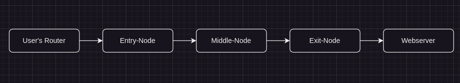
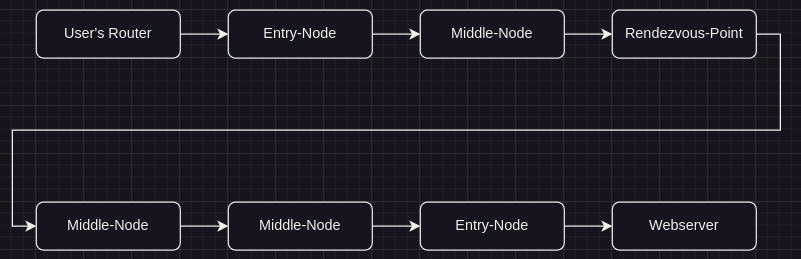

BytesOfProgress
Wiki
TOR Network Operation
The Tor network operates decentralized and aims to provide users with anonymity and privacy while browsing the internet. In addition to providing anonymity for regular internet browsing, the Tor network also supports hidden services, which are websites a nd services that are only accessible through the Tor network. These hidden services use .onion domain names and are hosted on servers within the Tor network, providing an extra layer of anonymity for both the service provider and the users accessing the service.
Here's how it works:
TOR relays / nodes
When a user connects to the Tor network, their internet traffic is routed through a series of relays, also known as nodes. These relays are operated by volunteers around the world.
Each relay in the Tor network only knows the IP address of the previous relay and the next relay in the chain. This creates layers of encryption, similar to layers of an onion, hence the name "onion routing." As data passes through each relay, a layer of encryption is removed, revealing the routing information for the next hop. This process continues until the data reaches its destination.
The final relay in the chain, known as the exit node, decrypts the final layer of encryption and sends the data to its destination on the regular internet. This exit node is the only point in the chain that can see the user's unencrypted data, but it does not know the original source of the data due to the layered encryption.
This is the traffic's route when a TOR user accesses a website with a .com, .org, etc. TLD:
When a TOR user accesses a .onion site, there are 2 more middle nodes. The rendezvous-point is where the nodes of the client and of the server find together to communicate:
Because each relay only knows about the relay before and after it in the chain, it is difficult for anyone, including the exit node, to trace the user's activity back to their original IP address. This provides users with a high level of anonymity and privacy.
The Tor network routes traffic in a way that is unpredictable and constantly changing, making it difficult for adversaries to monitor or track users' activities.
TOR bridges
Bridges in the Tor network are used to help users bypass censorship or restrictions imposed by network authorities. They act as entry points to the Tor network, similar to entry nodes, but they are not publicly listed in the main Tor directory. When using bridges, the number of middle nodes involved in a connection remains the same. The bridge serves as the entry point to the Tor network, and the connection continues to route through one or more middle nodes before reaching the exit node.
Bridge addresses are not publicly listed in the main Tor directory to prevent them from being easily blocked by censors. Instead, bridge addresses are distributed through various channels, such as email lists, websites, or directly from trusted individuals.
Bridges often use techniques to obfuscate their traffic to make it harder for censors to identify and block them. This can include using protocols like obfs4 (obfuscated TCP) or meek, which disguise Tor traffic as ordinary web traffic. When a user wants to connect to the Tor network using a bridge, they configure their Tor client to use the bridge's address. The Tor client then establishes a connection to the bridge, which acts as an entry point to the Tor network.
Once the connection to the bridge is established, the Tor client negotiates a circuit through the Tor network as usual. This circuit typically consists of three nodes: the bridge itself, a middle node, and an exit node.
By using bridges, users can access the Tor network without revealing their intention to connect to Tor, making it more difficult for censors to block or recognize their access. Additionally, the use of obfuscation techniques helps to further disguise Tor traffic, enhancing users' privacy and security.
Snowflake
Snowflake is a system that allows people from anywhere in the world to access censored websites and applications. Similar to VPNs that help users bypass internet censorship, Snowflake helps you avoid being noticed by internet censors by disguising your internet activity to appear as if you are using the internet for a regular video or voice call.
There are numerous tools such as: B. Snowflake, which "transform" Internet activity, each using a different technique. Some redirect internet traffic to appear to come from popular cloud providers such as Microsoft Azure and Amazon Web Services. Others encrypt Internet traffic to make it appear completely random.
Therefore, it becomes burdensome for censors to attempt to block such circumvention tools, as it would require blocking large portions of the Internet to achieve the original goal.
Essentially, both Snowflake and a Tor bridge allow the user to access the Tor network to bypass censorship and surveillance. Both serve the purpose of promoting internet freedom. The main difference is how they work and how they are deployed. While a Tor bridge is a specialized infrastructure that anonymizes traffic, Snowflake uses volunteers to serve as a proxy for other people's traffic. In the end, however, both offer the user a similar benefit: anonymous access to the free Internet.
You can join thousands of volunteers from around the world who have installed and are running a Snowflake proxy. You don't have to worry about what websites people are accessing through your Snowflake proxy. Their visible IP address will be the same as their Tor exit node, not yours.
There are different ways to run a Snowflake proxy, with the easiest one being the Firefox, Chrome or Edge browser extensions.
I implemented Snowflake right here on this site too, just enable it down below and keep this browser tab open!
back